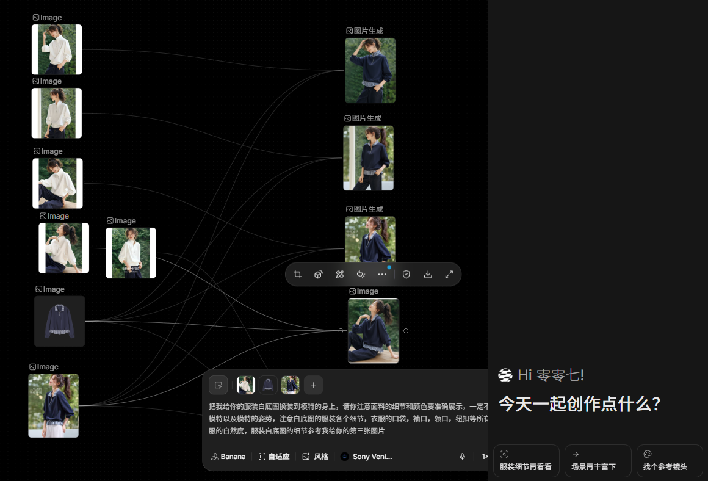

从缺图到可上架
- 判断哪些老款因缺少模特图而影响上架。
- 用白底商品图生成匹配款式和展示需求的模特图。
- 控制场景、姿势、模特和风格，降低视觉试错成本。
- 结果提交品牌方负责人和视觉人员确认后再用于上架。
03 / AI 商品视觉生成
针对大量老款缺少模特图、难以完成上架的问题，用白底商品图生成可用的模特图，并将结果交给品牌方负责人和视觉人员确认，再进入真实商品流程。
图像模型不是一次性出图工具，而是可以被拆成输入、约束、生成和审核的视觉 Workflow。AI 提高素材补充效率，品牌与视觉人员继续负责商品真实性、品牌表达和最终质量。

AI 模特图被持续用于缺少模特图的老款商品，推动部分商品完成上架并产生实际动销。项目价值不只是“生成一张图”，而是让视觉能力进入商品上架链路。
除模特图外，也探索将飞书对接图像模型 API，根据原始商品图生成设计线稿，并结合参考图与大货图替换滞销款视觉表现，用可控输入降低设计试错成本。